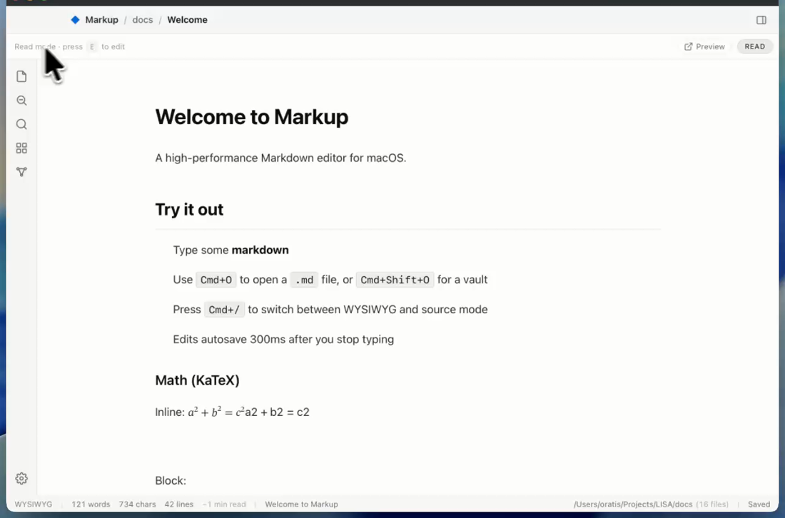
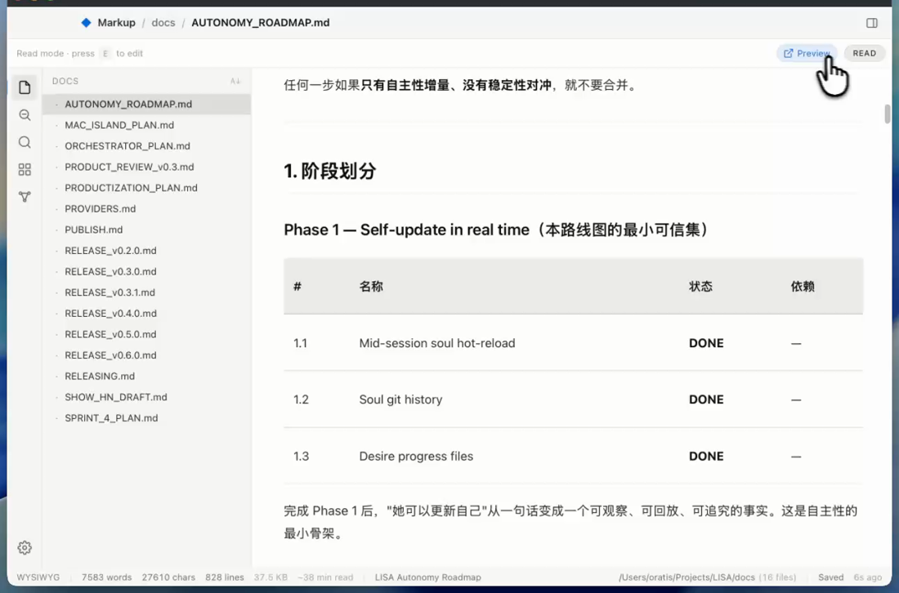
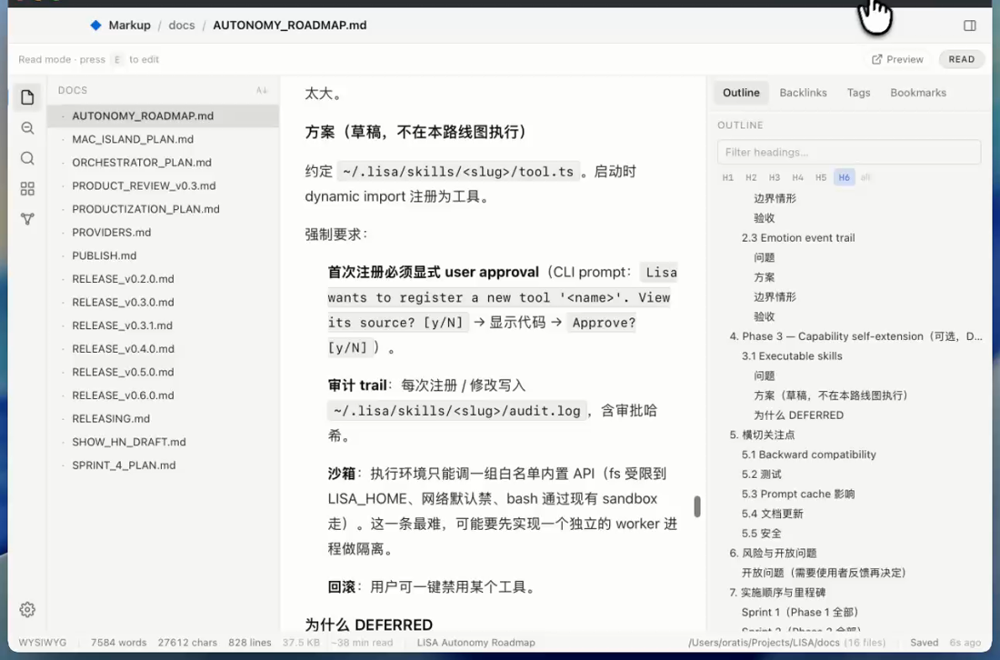

Markup is a fast, native, open-source Markdown editor. Reader-first by design: it renders your Markdown like a polished page, and edits on demand.
Free · Open source (MIT) · No account, no telemetry
Point it at a folder of notes — or a GitHub repo — and everything just works. Your files stay plain Markdown on disk.
Renders Markdown like a web page — code, math, Mermaid, tables, callouts — and drops into editing when you want.
Open any folder as a vault: wikilinks, backlinks with context, a per-note outline, tags, and a graph view.
Tantivy-powered search across thousands of files in about a second, with tag: and path: filters.
Read a whole project's docs offline — and round-trip your edits back to GitHub.
Obsidian-compatible Canvas, plus high-fidelity self-contained HTML and PDF export.
Built on Tauri + Rust — small, fast, native. No account, no telemetry, no tracking.



macOS is available now. iOS & iPadOS are in App Store review; Windows & Linux are on the way.
An honest look. Where another app is stronger for your workflow, we say so.
| Markup | Typora | Obsidian | |
|---|---|---|---|
| Price | Free | Paid | Free (personal) |
| Open source | Yes (MIT) | No | No |
| Native (not Electron) | Yes (Tauri/Rust) | Yes | No |
| Reader-first rendering | Yes | Editor-first | Editor-first |
| Vault · backlinks · graph | Yes | No | Yes |
| Open a GitHub repo as a vault | Yes (round-trip) | No | Via plugins |
| Plugin ecosystem | Young | Limited | Large & mature |
| Telemetry | None | — | Minimal |
| Platforms | macOS, iOS (Win/Linux soon) | mac/win/linux | All |
Typora is mature and cross-platform today; Obsidian has a deep plugin ecosystem. Markup focuses on a fast, native, open, reader-first core — and your files stay plain Markdown, so trying it costs you nothing.
Reading a project's README, /docs, or wiki on github.com is fine at a desk and miserable on the move. Markup opens any repo as a vault and renders the whole thing natively, online or off.
Free, open source, native, and private by default.